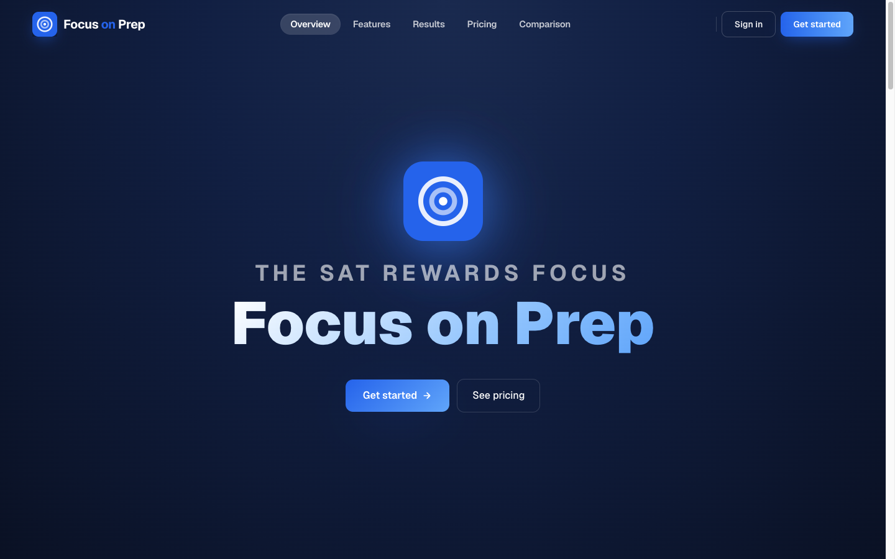
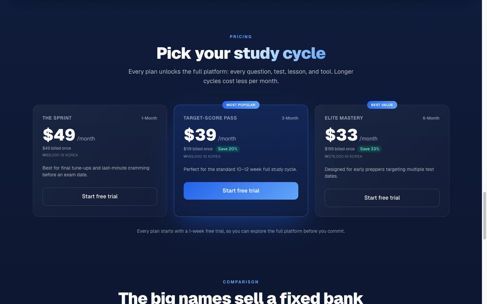

Blind is where 9M+ verified professionals talk salaries, layoffs, and everything HR can’t hear. My job: make Blind’s official channels feel native to that crowd — funny, fast, worth sharing. Using the pipeline on the previous page, I wrote, produced, and shipped 46 YouTube Shorts in four months — about three a week, as a team of one.
46
Shorts shipped
8
Named formats
~3
Per week
1
Person
I didn’t post videos; I built formats: Blind Meme (tech-culture skits), Beats by Blind (original parody tracks via Suno), Blind Choice (this-or-that polls), Blind POV (workplace confessions) — eight repeatable series, so every trend had a template ready.
Read the data, double down
AI-newsjacking memes — “When ChatGPT Is Down,” “How Prompt Injection Works,” “AWS Outage? AI Has Your Back(?)” — kept rising to the top of the channel, so the calendar shifted toward same-week AI news. Speed over perfection, measured weekly.
Six of 46 — the AI-newsjacking hits from the Blind Meme series. All 46 live at youtube.com/@BlindApp.
Anatomy of one short — “The Audition (AI Edition)”: ChatGPT wrote the gag → Gemini rendered the cast → Higgsfield gave it motion → Suno scored it → Figma + Adobe cut and captioned it. Start to posted: fast.
03/Proof · AI product + marketing
Then I founded an AI product — and wrote every word that sells it.
Focus Studio — Founder · Feb 2026–present · focusonprep.com ↗ · live product
Focus on Prep is a subscription Digital SAT platform I run as a registered business (포커스 스튜디오). Students get practice that never repeats: every question is AI-generated, then human-vetted before it goes live. I own the whole surface — product, brand, copy, pricing, growth.

The live hero — eyebrow, headline, CTAs: every word mine.

Three tiers I designed and priced: $33–$49/mo, 1-week free trial.
Every word on the site — the hero (“The SAT rewards focus”), ten feature stories, pricing copy, and a comparison table that takes on Kaplan, Princeton Review, and UWorld directly.
The AI content engine — generative AI mass-produces the question bank; a human-review gate keeps it trustworthy. “Always new, always vetted” isn’t a slogan — it’s the architecture.
The positioning — “The big names sell a fixed bank — ours keeps growing.” (the comparison headline, live on the site)
Why it matters here: this is the Wordbricks thesis in miniature — take an intimidating AI capability and make it feel simple, trustworthy, and worth paying for. In the product, and in the copy that sells it.
04/The Fit
Your job description is my last twelve months.
“글로벌 인지도를 높이기 위한 창의적인 콘텐츠를 영어로 기획하고 제작”
“Plan and produce creative content in English to raise global awareness.”
— From the Wordbricks job posting
You askCreative content in English, for global awareness
Four months of English short-form for a US tech audience, made from Seoul — 46 shipped shorts for Blind’s official channel.
You valueSpeed over perfection
~3 shorts a week as a team of one, on an AI pipeline built for iteration: test, read the data, double down.
Your missionMake AI feel like something anyone can use
GetGPT took 1M+ users from “AI is hard” to “I built my own tool.” Focus on Prep is my daily proof I can sell that exact story — I make an AI product feel simple and worth paying for.
“AI That Works Like You Think.” I already market — and live — that promise. Let me tell it to the world in both of my native languages.
Next/Let’s talk
Let’s make AI worth talking about.
Woon Jae Na · Content Marketer · Bilingual EN / KO · Seoul